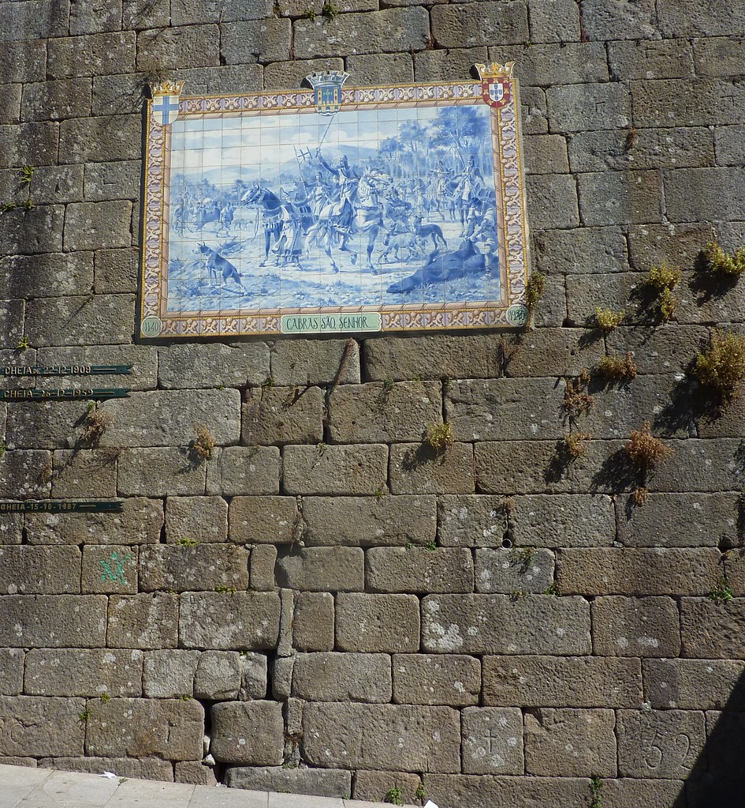

Turismo na cidade 1
Ponte de Lima
Ponte de Lima é uma vila portuguesa do Distrito de Viana do Castelo sendo parte da sub-região do Alto Minho, pertencente à região do Norte, e sendo sede do Município de Ponte de Lima que tem uma superfície de 320 km² e 41 169 habitantes em 2021,[5] tendo, por isso, uma densidade populacional de 128 habitantes por km2,[6] estando subdividido por 39 freguesias.
Imagem Cheias

imagem de marcação de cheias